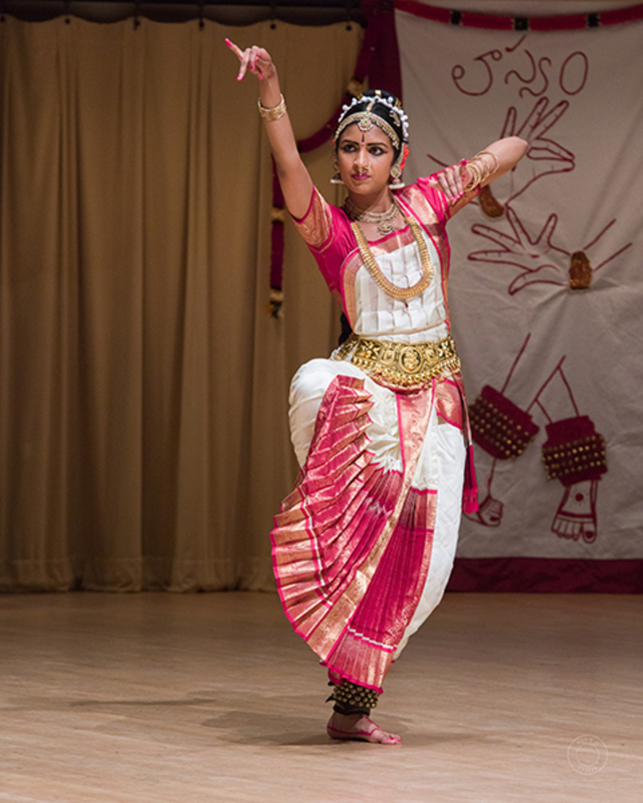
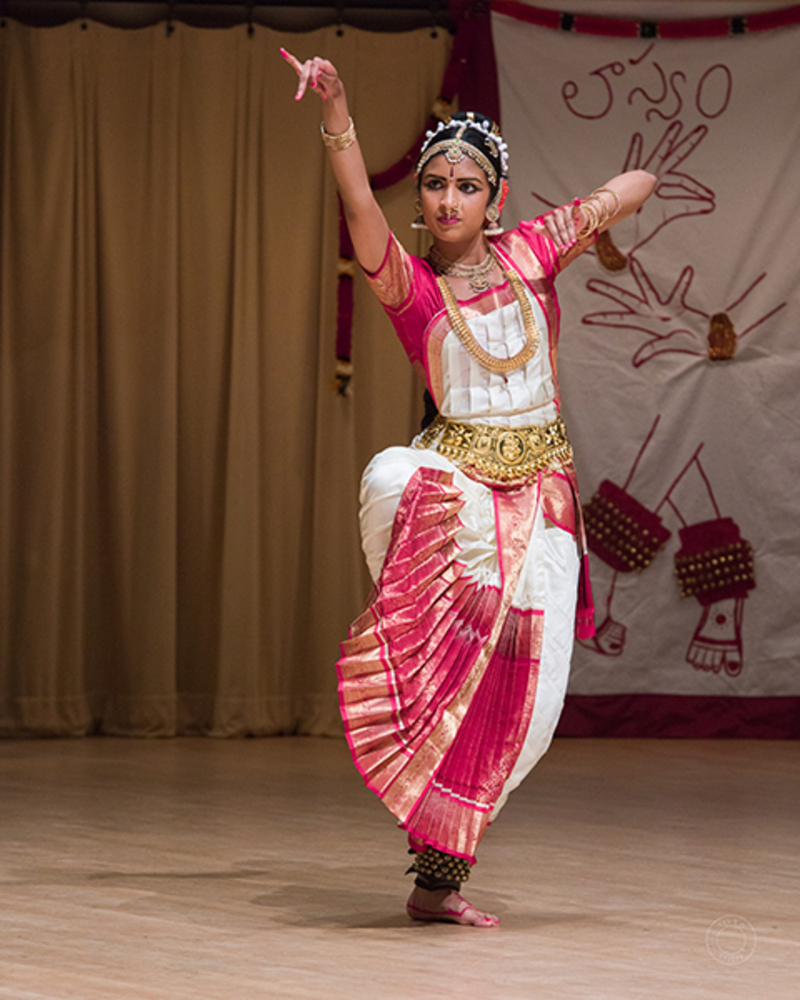

Lasyam's Guru
Hemamalini Yaddanapudi is the founder and Artistic Director of the Lasyam School of Kuchipudi Dance. Hemamalini Yaddanapudi is a Kuchipudi dancer, teacher, director and choreographer of international repute. By profession, Hema is a trained lawyer and was selected as a Judge in Andhra Pradesh, India. In Sanskrit, the term lasyam means "graceful, delicate dance" performed by the Goddess Parvathi. As described by the renowned Sage Nadikeswara in the book “Abhinayadarpanam”, lasyam has several “Dasa Lasyangas”, known as Geyapadam, Stithapaatyam, Aseenam, Pushpagandika, Prachedakam, Thrimudakam, Seiydhavakam, Dwimudakam, Uttamottamakam, Ukthaprathyuktakam. The word Dasa means Ten. The delicacy in Indian classical dance is known for its ten varieties of delicate graces (the subtle expressions). Hemamaili Yaddanapudi was inspired with the grace and delicacy of Kuchipudi and named her school Lasyam.


 
